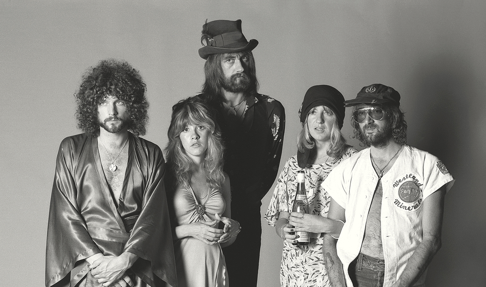
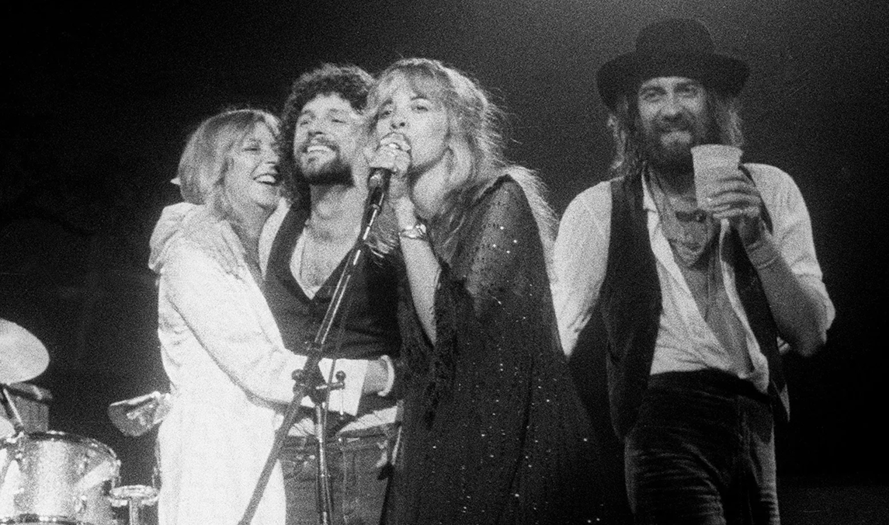
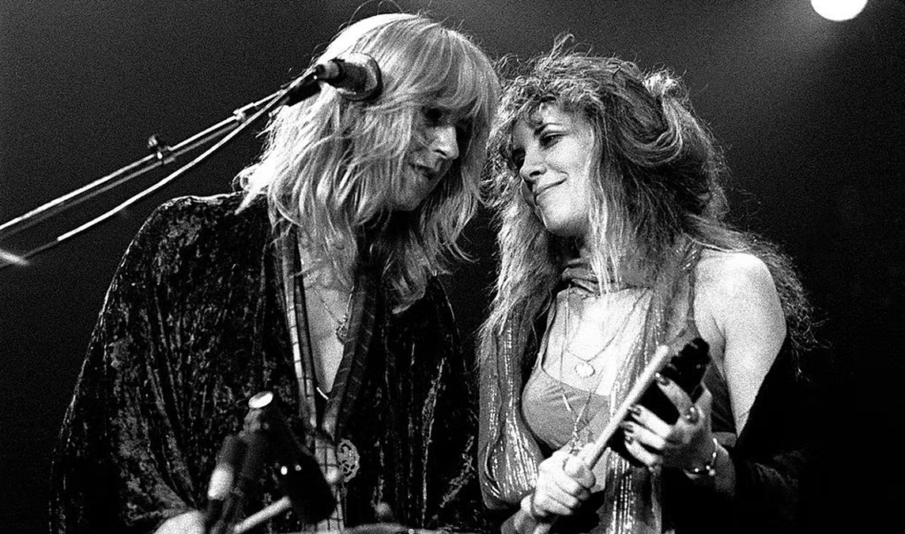
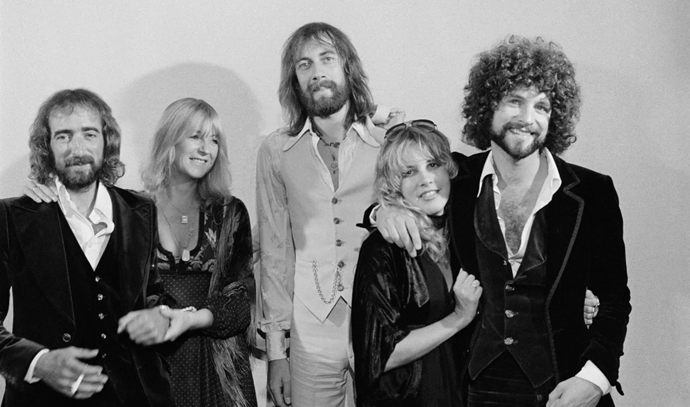
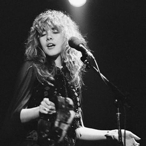
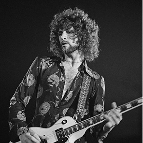
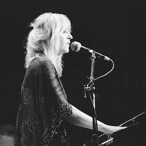
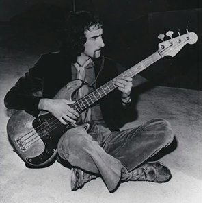
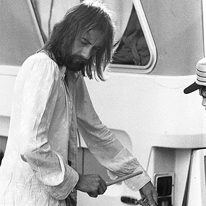
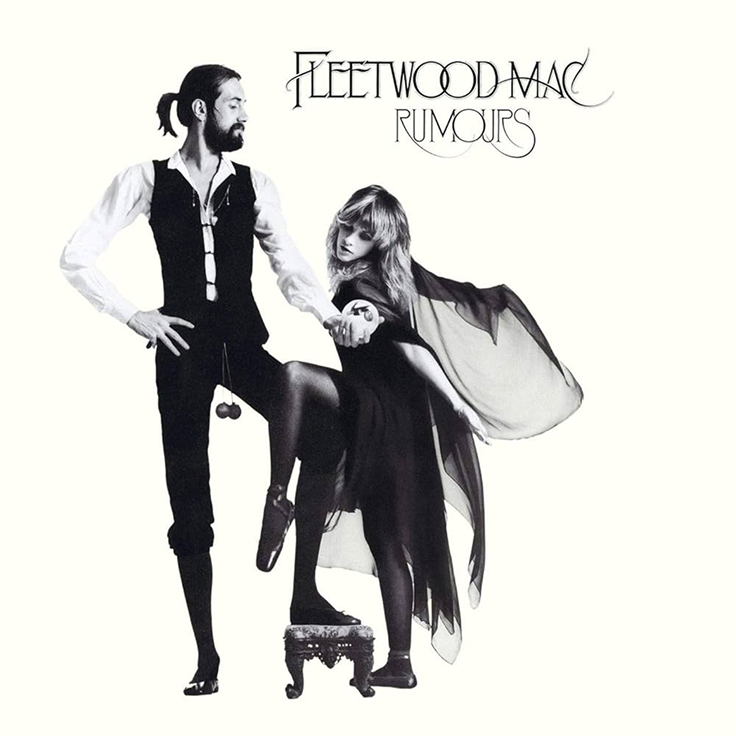

Formed in London in 1967, Fleetwood mac, named after two of its founders, is a soft rock band that rose to
popularity
in the mid 70s. They started out as a British blues band lead by Peter Green but later evolved to what they
are
known for today. The band released over 15 albums throughout the years and had numerous lineup changes, the
most
famous one being the 5 who created the album Rumours. In 1998, Fleetwood Mac was inducted in the Rock and
Roll Hall
of Fame, marking them as one of the most iconic bands of all time.




THE BAND

VOCALS, SONGWRITER
(1948- )
Arizona, US
Joined: 1975
Stevie Nicks

VOCALS, GUITAR, SONGWRITER
(1949- )
California, US
Joined: 1975
Lindsey Buckingham

VOCALS, KEYBOARD, SONGWRITER
(1943-2022)
Bouth, UK
Joined: 1970
Christine McVie

BASS
(1945- )
London, UK
Joined: 1967 (founder)
John McVie

DRUMS
(1947- )
REDRUTH, UK
Joined: 1967 (founder)
Mick Fleetwood
THE ALBUM

Rumours is Fleetwood Mac’s 11th studio album (second with this lineup), and was released on February
4th, 1977. Most, if
not all the songs are inspired by the band’s emotional turmoil since Lindsey Buckingham and Stevie
Nicks were going
through a breakup and Christine and John McVie were going through a divorce. It is known that during
the recording, the
members would get into screaming matches but it made for very raw and relatable songs with themes of
love, heartache and
betrayal. Rumours won a grammy for album of the year in 1978 and is one of the best selling albums
of all time (selling
over 40 million copies worldwide).
(Buckingham)
The percussion in this song was made by hitting a chair in the recording studio.
(Nicks)
The song was written in 10 minutes and is the only Fleetwood Mac song to have hit
no.1 on the Billboard
Hot 100 in the US.
(Buckingham)
While recording, the strings of the guitar played by Buckingham were changed evry
20 minutes, sugested by
the bands producer, to keep the bright sound of new strings.
(C. McVie)
This is the most optimistic song in the album. It was used for Bill Clinton's
campain in 1992 and the
band performed it at his inaugural ball in 1993.
(Buckingham)
The song was recorded in 3 different studios during 4 months. It's about
Buckingham' perspective on his
breakup with Stevie Nicks.
(C. McVie)
Written at midnight in about 30 minutes, the song was recorded in one take in
an auditorium with 15 microphones
to capture McVie's performance.
(Nicks, Buckingham, C. McVie, J. McVie, M. Fleetwood)
The song took a year to make and was created from pieces of different songs
put together. It is the only
song on the album to give writting credits to all the members.
(C. McVie)
C. McVie told her then husband, bassist John McVie, the song was about her
dog. In actuallity, it was
about her affair with the band's lighting director.
(Nicks)
Originally it was written years before for her and Buckingham's duo album.
The song ended up replacing
silver springs on the final cut because they needed a shorter song.
(C. McVie)
C. McVie has said she wrote the song about Fleetwood who was the only father
at the time. Despite that,
people have speculated is was also a song written about her relationship with the band's
lighting director.
(Nicks)
Nicks has said this song is about having a hard time dealing with a bad
relationship, drugs and trying to
get trough it.
(Nicks)
Not originally on the album but added in later versions, this song is about
Nicks's perspective on her
breakup with Lindsey Buckingham. In later years, it has become a fan favourit because of
the emotional live
performances of the song, specifically the 1997 one.